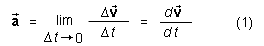

denotes the acceleration at time t and
denotes the acceleration at time t and  the velocity vector of
the mass point. The symbol Δ denotes the change in
velocity between the instant at time t and a later instant at
time t + Δt,
the velocity vector of
the mass point. The symbol Δ denotes the change in
velocity between the instant at time t and a later instant at
time t + Δt,
The acceleration of a mass point is defined below. Equations related to acceleration are given on Page 2.
Definition of acceleration in words:
Acceleration is the time-rate-of-change of velocity.
Definition of acceleration in symbols:

In this definition, denotes the acceleration at time t and the velocity vector of
the mass point. The symbol Δ denotes the change in
velocity between the instant at time t and a later instant at
time t + Δt,
Δ = (t + Δt) -
(t). (2)
(2)
The symbol d/dt is calculus notation for the more explicit
notation with the limit symbol. When the notation
d/dt is
used in physics, it is useful to think of d and dt as very small
quantities and of the symbol d/dt as the ratio of these small quantities.
Comment 1. The ratio Δ/Δ
t behind the limit operation in the
definition of acceleration is called average acceleration.
With this concept, the definition of acceleration can be reworded as
follows.
The acceleration at time t is the limit of the average acceleration over a time interval extending from time t to time t + Δt when Δt goes to zero.
The acceleration defined in Eq.(1) is also called instantaneous acceleration because it is the acceleration at an instant of time, not the average acceleration over a time interval. Usually, one simply says "acceleration" when one means "instantaneous acceleration".
Comment 2. Acceleration is a vector quantity, arising from
ratios that have a vector in the numerator and a scalar in the
denominator. The direction of the acceleration vector at a given
instant is the direction in which the tip of the velocity vector is
moving at that instant if the tail end of the velocity vector is
being held fixed. (Otherwise, the motion of the tip of the velocity
vector would not represent changes Δ in the velocity vector,
as are needed in the definition of acceleration.)
With the tail end of the velocity vector held fixed, the tip of the vector describes a path. Let's call it the velocity path. At any given moment, the acceleration vector's direction is along the tangent to the velocity path at that instant. See the following illustration which shows the velocity path of a mass point in magenta, three velocity vectors (in magenta) corresponding to three different instants of time, and the acceleration vectors (in orange) at these three instants.

Comment 3. The magnitude of the acceleration is a scalar
quantity denoted either by a or ||. It has no special name.
Comment 4. The SI-unit of acceleration is m/s2.
Comment 5. When a motion is along a straight line, say,
the x-axis, most of the time one will be working with the
scalar x-component ax of the acceleration
instead of the vector and will be referring to ax as
"acceleration" instead of "x-component of acceleration", for
brevity's sake. However, a vector and its scalar x-component
are not the same thing. The vector does not change when the direction of the
x-axis is reversed, but the scalar ax has
its sign reversed when the direction of the x-axis is
reversed.
One may even drop the subscript x and write just a instead of ax, again for brevity's sake. However, one should explain that a denotes the (x-component of the) acceleration, not the magnitude of the acceleration, unless this is clear from the context.
Comment 6. When an extended object is moving, its parts may be moving with different accelerations, e.g., the object may be rotating or the object may be vibrating. In such cases, one cannot just speak of "the acceleration of the object".
In many cases, however, it will be possible to assume the object to be rigid and non-rotating. In such cases, all parts of the object have the same acceleration and it makes sense to speak of the acceleration of the object. In other cases, e.g., when the object is rotating in addition to performing some motion as a whole, one will mean the acceleration of the center of mass of the object when speaking of the object's acceleration. This should be made clear, however, unless it is clear from the context.